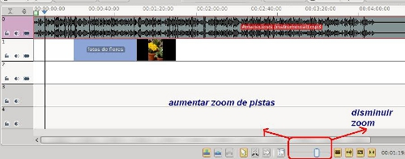
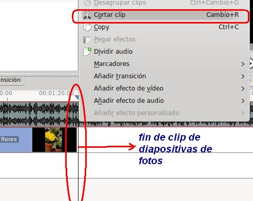
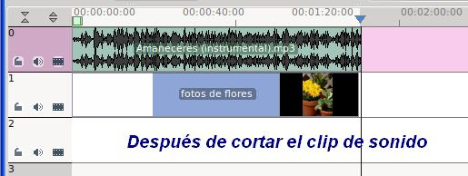

Edición de Audio y video
1.2.1 Añadir Sonido
En este apartado procedemos a ponerle música de fondo a nuestra presentación generada en el apartado anterior.
- Abrimos el proyecto3 generado en el apartado 1.2
- Añadimos a nuestro árbol de proyectos un clip de sonido.
- Desplazamos nuestro clip de fotos a la pista 1 de Audio y Video
- Ubicamos el clip de audio en la pista 0.
- El resultado se puede asemejar a la imagen.

-
En nuestro caso el fichero de audio es mucho mayor que nuestro clip de diapositivas. Procedermos a recortar el clip de audio en la posición en la que finaliza la presentación del clip de diapositivas. Para ello seleccionamos la pista que contiene el clip de audio.

- Ubícate con el cursor de la línea de tiempo en el lugar que deseamos cortar. Utiliza el botón derecho / cortar clip y nos vamos a la pista con el audio y cortamos.
- Borra (suprimir) la parte del audio que nos sobra.

- Guarda el proyecto con el mismo u otro nombre.
- Si generas el video observarás que tu clip de presentación de fotos tiene sonido de fondo.
Jo.R.C.A. 2004 - 2011

Edición de Audio y Video con Software Libre by José Ramón Cerdeira Alonso is licensed under a Creative Commons Reconocimiento-No comercial-Compartir bajo la misma licencia 3.0 España License